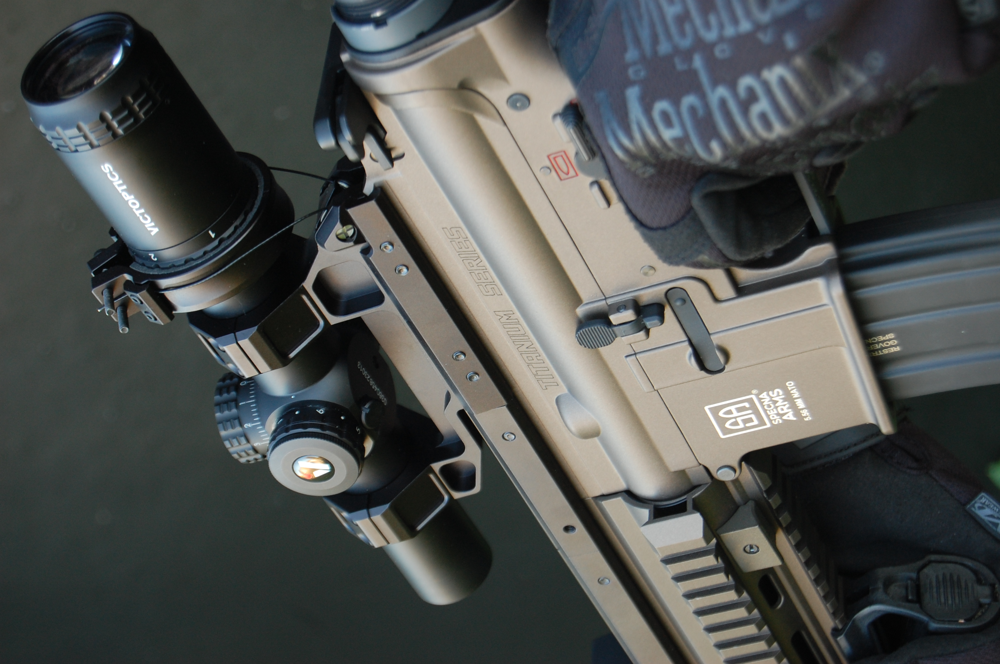
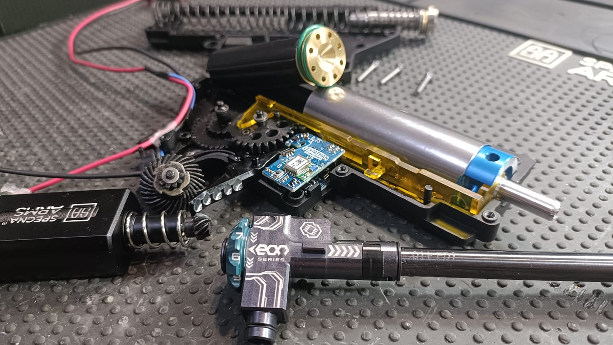
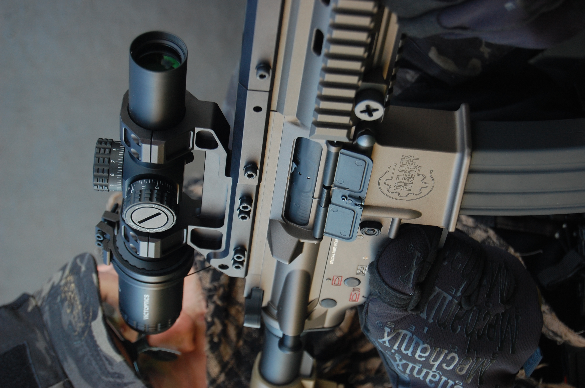
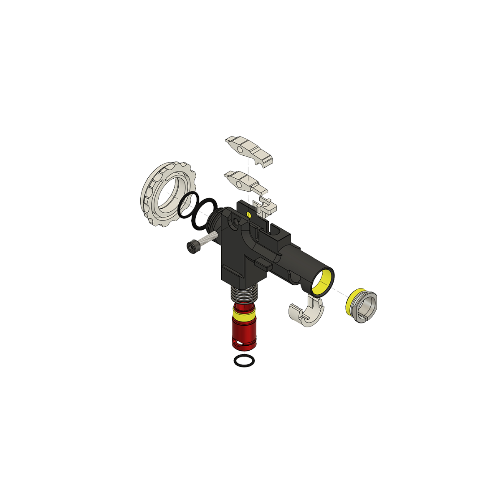
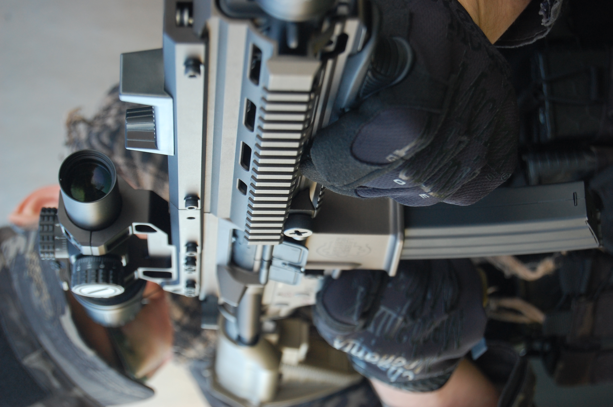

01
Cabeza de pistón Joule Master
Juega con cualquier peso de bola. Se ajusta sola dependiendo de la réplica gracias a la transmisión de energía por su avanzada tecnología.
Beneficio: adaptación inteligente y entrega más constante.
O'Clock Airsoft · Titanium Series
Una preparación técnica pensada para usuarios que buscan respuesta, consistencia y fiabilidad en configuraciones exigentes.

Preparación como sistema
Pack Fusilero se plantea como una preparación completa. Cada componente tiene sentido dentro del conjunto: equilibrio, respuesta y consistencia antes que montaje por catálogo.
El rendimiento real nace cuando todo trabaja en la misma dirección.


Titanium Series
Una configuración orientada a mejorar la respuesta, la estabilidad mecánica y la confianza del usuario en partidas dinámicas. No se plantea como una simple suma de piezas, sino como una preparación completa con criterio técnico.
Otras configuraciones disponibles
Componentes incluidos
La selección de piezas no busca llenar una lista. Busca que cada elemento aporte al comportamiento final de la réplica.
01
Juega con cualquier peso de bola. Se ajusta sola dependiendo de la réplica gracias a la transmisión de energía por su avanzada tecnología.
Beneficio: adaptación inteligente y entrega más constante.
02
Fabricados por nosotros con una dureza Shore 40-45. Ayuda a silenciar e igualar la potencia del conjunto.
Beneficio: ciclo más silencioso y potencia más estable.
03
Elemento clave entre cámara y sistema neumático.
Beneficio: alimentación y sellado más consistentes.
04
Aporta estabilidad al conjunto del muelle durante el ciclo.
Beneficio: funcionamiento más limpio y controlado.
05
Base mecánica del ciclo de compresión.
Beneficio: respuesta más sólida y comportamiento más predecible.

06
Detecta tu gatillo por láser para una lectura precisa y rápida del disparo.
Beneficio: respuesta más limpia y control más preciso.
07
Libera toda la potencia de tu réplica. Motor sin escobillas que no te limita ni se calienta, evitando los problemas habituales.
Beneficio: entrega más eficiente, estable y preparada para uso exigente.
08
Fabricados en CNC y modificados a la medida de tu réplica para ajustarse a la mejor relación.
Beneficio: no te saltes ni un disparo.
Beneficios técnicos
La preparación busca reducir pérdidas y mejorar la transmisión de energía entre piezas clave del sistema.
Un conjunto mejor ajustado ayuda a reducir variaciones innecesarias entre disparos.
El sellado y la compresión son claves para aprovechar mejor el trabajo del muelle.
No se trata de añadir piezas por añadir, sino de seleccionar componentes que tengan sentido juntos.
Cada configuración debe comprobarse, ajustarse y validarse desde el criterio del taller.

Diseñado como sistema
El resultado no depende solo de la calidad individual de cada componente, sino de cómo trabajan juntos dentro del ciclo mecánico.
La diferencia no está en montar más piezas. Está en que trabajen como una sola.
Criterio técnico / compatibilidad
Antes de recomendar una configuración, importa entender la base de la réplica, el uso previsto y el comportamiento que busca el jugador.

Evaluación
Evaluación de la réplica antes de definir la preparación.
Compatibilidad
Compatibilidad de piezas según plataforma, gearbox y medidas internas.
Ajuste
Ajuste del conjunto para que los componentes trabajen de forma coherente.
Prueba
Prueba de funcionamiento y revisión del comportamiento general.
Recomendación
Recomendación según uso, configuración buscada y estado real de la réplica.
Ficha técnica útil
Usuarios que buscan una preparación de fusilero equilibrada, con mejor respuesta y mayor confianza mecánica.
Componentes seleccionados según configuración y compatibilidad de la réplica.
Compresión, ajuste, compatibilidad, respuesta, alimentación y comportamiento general.
Recomendable instalación técnica para asegurar el ajuste correcto.
Depende de la plataforma, gearbox y medidas internas de la réplica.
Consulta compatibilidad para evitar montar piezas sin criterio.
O'Clock Airsoft
Cuéntanos qué base tienes, qué uso le das y qué comportamiento buscas. Te orientamos antes de montar piezas sin sentido.
FAQ
Depende de la plataforma y de las medidas internas. La recomendación es confirmar compatibilidad antes de comprar el pack.
Está orientado a mejorar respuesta, eficiencia neumática, consistencia entre disparos y confianza mecánica en uso dinámico.
Es recomendable si se busca un ajuste correcto y una validación técnica del conjunto.
Incluye los componentes definidos para la configuración. Algunas réplicas pueden requerir ajustes o piezas complementarias según su estado.
Sí. La landing está preparada para enlazar con un formulario, WhatsApp o flujo de consulta técnica.